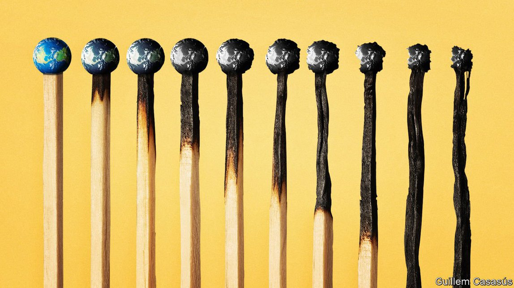
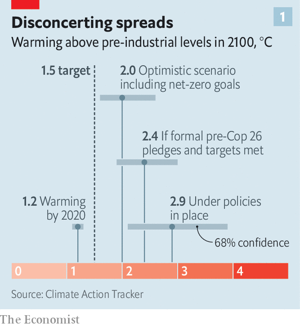
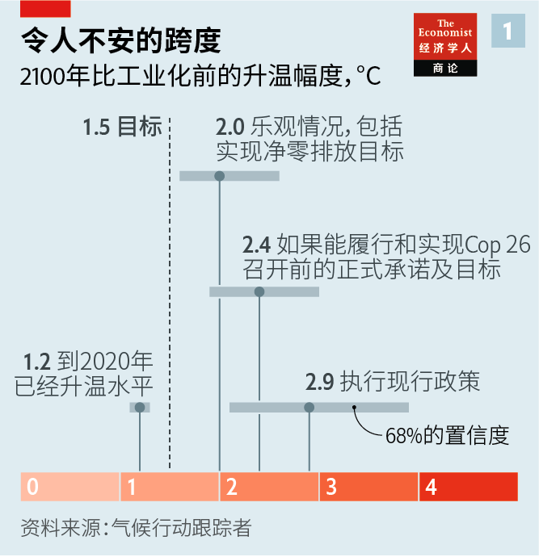
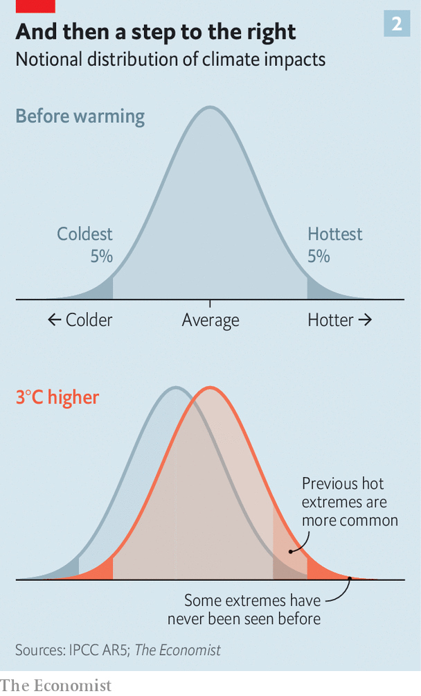
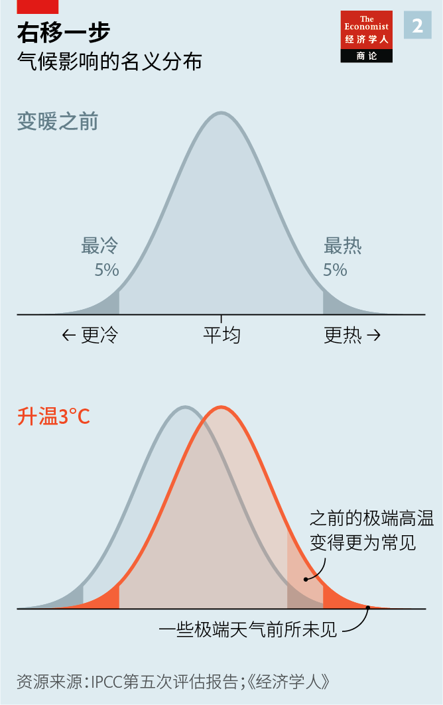
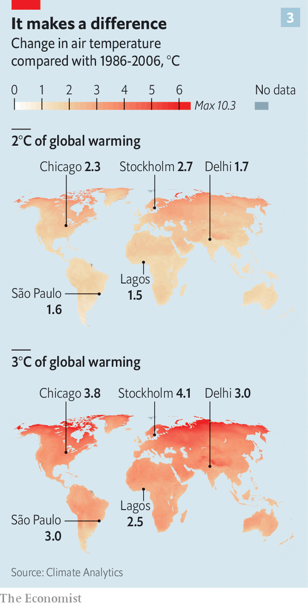
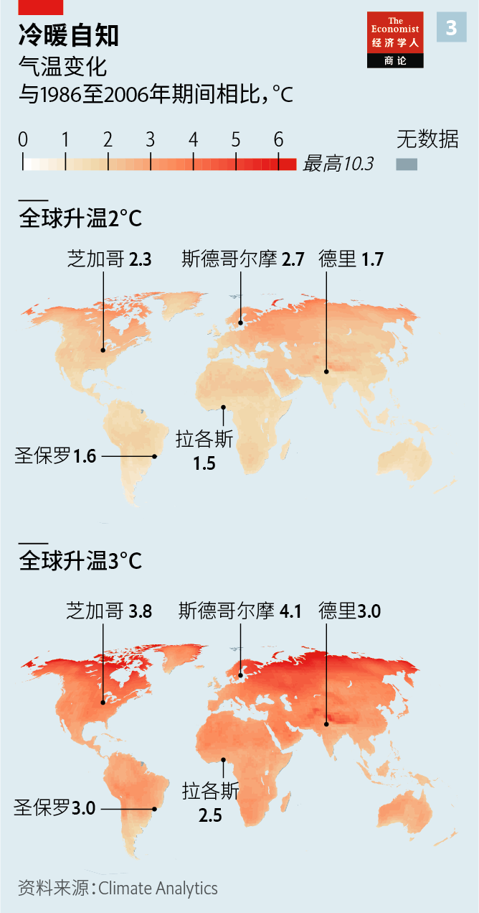

2021-08-02T14:56:04+00:00
What’s the worst that could happen
最糟会是什么样
最糟會是什麼樣
Three degrees of global warming is quite plausible and truly disastrous
全球变暖三度很有可能，那是真的灾难
全球變暖三度很有可能，那是真的災難
Rapid emission cuts can reduce the risks but not eliminate them
快速减排可以降低但不能消除风险【深度】
快速減排可以降低但不能消除風險【深度】

BY THE STANDARDS of the 21st century as a whole, 2021 will almost certainly go down as a comparatively cool year. By the standards of the rest of human history its weather looks disconcertingly like hell.
若是放眼整个21世纪，2021年几乎肯定会变成相对凉爽的一年。若是纵观其余的人类历史，这一年的天气就如同地狱般令人难安。
若是放眼整個21世紀，2021年幾乎肯定會變成相對涼爽的一年。若是縱觀其餘的人類歷史，這一年的天氣就如同地獄般令人難安。
On July 20th, as Belgium, Germany, the Netherlands and Switzerland were still coming to terms with the fact that a stationary system of storms had turned entire towns into rivers and shredded the surrounding countryside, hundreds of thousands of people in the Chinese province of Henan were evacuated in the face of floods of their own; the city of Zhengzhou saw a year’s worth of rain in three days.
7月20日，当比利时、德国、荷兰和瑞士仍在适应持续多日的暴雨已把城镇变成了汪洋、让乡村千疮百孔的现实，中国河南省因洪水疏散了几十万人，郑州市三天的降雨量相当于一年的降雨总量。
7月20日，當比利時、德國、荷蘭和瑞士仍在適應持續多日的暴雨已把城鎮變成了汪洋、讓鄉村千瘡百孔的現實，中國河南省因洪水疏散了幾十萬人，鄭州市三天的降雨量相當於一年的降雨總量。
Also on July 20th Cizre, in Turkey, saw a temperature of 49.1°C (120°F), the highest ever recorded in the country. There has been barely any respite from searingly hot conditions along the northern Pacific coast of North America since the region was hit by an unprecedented heatwave two weeks ago, and already the region is bracing for another. Other places at high latitudes have been seeing similar—if less destructive—anomalies. In the first half of the month Finland experienced its longest heatwave for at least 60 years, with temperatures rising to the low 30°Cs in Lapland. On July 14th the country tossed and turned through its hottest night ever: two weather stations recorded temperatures no lower than 24.2°C.
同样是在7月20日，土耳其吉滋雷（Cizre）的气温达到了49.1°C，为该国有记录以来的最高温。自两周前一股前所未有的热浪袭击北美北部的太平洋沿岸以来，这个地区几乎一直陷于高温之中，并且又有一股热浪来袭。其他高纬度地区也出现了类似的（不过破坏性相对较小的）异常天气。7月上半月，芬兰经受了至少60年来为时最长的热浪，拉普兰（Lapland）的气温已经冲破30°C。芬兰在7月14日度过了有史以来最热的一晚，两个气象站记录的温度不低于24.2°C，整个国家焦灼难眠。
同樣是在7月20日，土耳其吉滋雷（Cizre）的氣溫達到了49.1°C，為該國有記錄以來的最高溫。自兩周前一股前所未有的熱浪襲擊北美北部的太平洋沿岸以來，這個地區幾乎一直陷於高溫之中，並且又有一股熱浪來襲。其他高緯度地區也出現了類似的（不過破壞性相對較小的）異常天氣。7月上半月，芬蘭經受了至少60年來為時最長的熱浪，拉普蘭（Lapland）的氣溫已經衝破30°C。芬蘭在7月14日度過了有史以來最熱的一晚，兩個氣象站記錄的溫度不低於24.2°C，整個國家焦灼難眠。
On July 11th, a National Weather Service thermometer at Furnace Creek in Death Valley recorded a temperature of 54°C. If confirmed by the World Meteorological Organisation (WMO), that would tie a reading taken at the same location last year for the hottest formally recognised daytime temperature ever. On July 19th more than 40% of the Greenland ice cap had meltwater on it. The amount of sea-ice cover in the Arctic was as low as it was at the same point in 2012, which saw the lowest summer sea ice ever recorded.
7月11日，美国国家气象局在加州死亡谷的熔炉溪（Furnace Creek）的监测站测得54°C的高温。如果得到世界气象组织（WMO）确认，这将是继去年之后在该地点再次测得地球有正式记录的最高日间气温。7月19日，超过40%的格陵兰冰盖上有融水。北极的海冰覆盖面积与录得夏季历史极低值的2012年同期一样低。
7月11日，美國國家氣象局在加州死亡谷的熔爐溪（Furnace Creek）的監測站測得54°C的高溫。如果得到世界氣象組織（WMO）確認，這將是繼去年之後在該地點再次測得地球有正式記錄的最高日間氣溫。7月19日，超過40%的格陵蘭冰蓋上有融水。北極的海冰覆蓋面積與錄得夏季歷史極低值的2012年同期一樣低。
This is what Earth looks like when, according to the latest data from the WMO, it is 1.1-1.3°C warmer than it was before the steam engine was invented. The Paris agreement of 2015 created a compact to limit global warming to “well below 2°C” above the pre-industrial, ideally seeing it rise no more than 1.5°C.
这就是地球的现状，根据WMO的最新数据，现在的温度比蒸汽机问世之前高了1.1°C至1.3°C。2015年的《巴黎协定》制定了一项契约，要将全球变暖幅度控制在比工业化前升温“显著低于2°C”，最好不超过1.5°C。
這就是地球的現狀，根據WMO的最新數據，現在的溫度比蒸汽機問世之前高了1.1°C至1.3°C。2015年的《巴黎協定》制定了一項契約，要將全球變暖幅度控制在比工業化前升溫“顯著低於2°C”，最好不超過1.5°C。
That more stringent target was demanded by, among others, small-island states which see the amount of sea-level rise inherent in two degrees of warming as an existential threat. A huge subsequent report by the Intergovernmental Panel on Climate Change found that the difference between the two targets, even if it was just 10cm of additional sea-level rise by 2100, would wipe away the livelihoods of millions. Compared with 1.5°C of warming, 2°C would also expose an additional 420m people to record heat. And it would devastate Arctic ice cover.
更严格的1.5°C目标是小岛国等成员国强烈要求的，这些国家认为变暖两度所导致的海平面上升将威胁它们的生存。政府间气候变化专门委员会（IPCC）随后的一份长篇评估报告认为，即使两个目标之间的差异是海平面仅多上升10厘米，也可能会让千百万人丢了生计。与升温1.5°C相比，升温2°C还会让另外4.2亿人面临破纪录的高温，此外也会彻底破坏北极冰盖。
更嚴格的1.5°C目標是小島國等成員國強烈要求的，這些國家認為變暖兩度所導致的海平面上升將威脅它們的生存。政府間氣候變化專門委員會（IPCC）隨後的一份長篇評估報告認為，即使兩個目標之間的差異是海平面僅多上升10厘米，也可能會讓千百萬人丟了生計。與升溫1.5°C相比，升溫2°C還會讓另外4.2億人面臨破紀錄的高溫，此外也會徹底破壞北極冰蓋。
Those Paris targets were, and remain, both prudent and incredibly ambitious. Right after the conference Climate Action Tracker (CAT), an NGO, set itself the task of totting up all the emission-reduction goals and other policies, like fuel-efficiency standards for cars and trucks and renewable-energy targets, that the various nations had made. To gauge the aggregate impact of those measures, CAT calculated the atmospheric concentrations of carbon dioxide they looked likely to produce and then used the results of climate models to see what those concentrations might mean in terms of warming. Their results showed the world was on track to be 2.7°C hotter than the pre-industrial baseline by 2100.
巴黎峰会设定的这些目标既审慎，又极富雄心——到今天看依旧如此。峰会落幕后，非政府组织气候行动追踪者（Climate Action Tracker，以下简称CAT）给自己设定了一项任务，就是汇总各国制订的减排目标和其他政策，如汽车和卡车燃油效率标准和可再生能源目标等。为了衡量这些措施的整体影响，CAT计算了它们可能导致的大气二氧化碳浓度增长，然后用气候模型的结果来了解这样的浓度增长对气候变暖的可能影响。他们的研究结果表明，照此趋势，到2100年全球温度将比工业化前水平高出2.7°C。
巴黎峰會設定的這些目標既審慎，又極富雄心——到今天看依舊如此。峰會落幕後，非政府組織氣候行動追蹤者（Climate Action Tracker，以下簡稱CAT）給自己設定了一項任務，就是匯總各國制訂的減排目標和其他政策，如汽車和卡車燃油效率標準和可再生能源目標等。為了衡量這些措施的整體影響，CAT計算了它們可能導致的大氣二氧化碳濃度增長，然後用氣候模型的結果來了解這樣的濃度增長對氣候變暖的可能影響。他們的研究結果表明，照此趨勢，到2100年全球溫度將比工業化前水平高出2.7°C。
The people who negotiated the Paris agreement were fully aware of this contradiction. They expected, or hoped, that countries would make new and more ambitious pledges as technology progressed, as confidence that they were all really on board built up and as international co-ordination improved. There is evidence that this is happening. Revised pledges formally submitted to the UN over the past 12 months in the run-up to the COP26 conference to be held in November have knocked CAT’s estimate down a bit. If all government promises and targets are met, warming could be kept down to 2.4°C. Including targets that have been publicly announced but not yet formally entered into the Paris agreement’s ledgers, such as America’s net-zero-by-2050 pledge and China’s promise to be carbon-neutral by 2060, brings the number down to a tantalising 2.0°C.
商定《巴黎协定》的人们很清楚这种目标和措施上的差距。他们预期，或者说是希望，随着科技不断进步、对彼此切实付诸努力的信心增强以及国际协作改善，各国将做出新的更具野心的承诺。有证据表明这正在发生。《联合国气候变化框架公约》第26次缔约方大会（COP26）将在11月举行，过去12个月里各国向联合国正式提交了修改过的承诺，让CAT的估计结果略有下降。如果所有政府的承诺和目标都得以实现，升温幅度可能会降到2.4°C。算上美国到2050年实现净零排放和中国到2060年实现碳中和等已公布但尚未正式列入《巴黎协定》的承诺，CAT的估计数字降到了颇具吸引力的2.0°C。
商定《巴黎協定》的人們很清楚這種目標和措施上的差距。他們預期，或者說是希望，隨着科技不斷進步、對彼此切實付諸努力的信心增強以及國際協作改善，各國將做出新的更具野心的承諾。有證據表明這正在發生。《聯合國氣候變化框架公約》第26次締約方大會（COP26）將在11月舉行，過去12個月里各國向聯合國正式提交了修改過的承諾，讓CAT的估計結果略有下降。如果所有政府的承諾和目標都得以實現，升溫幅度可能會降到2.4°C。算上美國到2050年實現凈零排放和中國到2060年實現碳中和等已公布但尚未正式列入《巴黎協定》的承諾，CAT的估計數字降到了頗具吸引力的2.0°C。
That sounds promising. But the figure comes with a very big caveat and with large uncertainties.
这听起来前景光明。但是这个数字带有一个重大的附加说明，具有很大的不确定性。
這聽起來前景光明。但是這個數字帶有一個重大的附加說明，具有很大的不確定性。
The caveat is that this estimate includes policies announced but not enacted. A world which follows the policies that are actually in place right now would end up at 2.9°C, according to CAT (the UN Environment Programme, which tracks the gap between actual emissions and those that would deliver Paris, provides a somewhat higher estimate). Almost everyone expects or hopes that policies will tighten up at least somewhat. But any reasonable assessment of the future has to look at what may happen if they do not.
这个附加说明就是这项估计把已公布但尚未成文的政策计算在内。根据CAT的计算，按照目前已经实际实施的政策，全球将升温2.9°C（联合国环境规划署得出的估计值还要高，该署跟踪了实际排放量与达到《巴黎协定》目标所需排放量之间的差距）。几乎各方都预期或希望政策至少还会收紧一些。但任何对未来的合理评估都必须考虑如果不收紧会如何。
這個附加說明就是這項估計把已公布但尚未成文的政策計算在內。根據CAT的計算，按照目前已經實際實施的政策，全球將升溫2.9°C（聯合國環境規劃署得出的估計值還要高，該署跟蹤了實際排放量與達到《巴黎協定》目標所需排放量之間的差距）。幾乎各方都預期或希望政策至少還會收緊一些。但任何對未來的合理評估都必須考慮如果不收緊會如何。
As to the uncertainties, they are many and various. Translating political statements into gigatonnes of carbon dioxide is hardly an exact science. Just as no one knows whether countries will choose to stand by the policies they have mooted, nor can they be sure that those policies will deliver the reductions claimed. And although there is no doubt that greenhouse gases influence climate and are driving the rising temperatures seen around the world, difficulties in untangling various feedback loops and complex countervailing effects mean that there remains considerable uncertainty about how much further climate change a given amount of greenhouse gas brings about.
至于不确定性，那就多种多样了。把政治声明转化为数以十亿吨计的二氧化碳减排并非严密的科学。没人知道各国是否会选择切实执行它们提出的政策，也不确定这些政策能否实现所声称的减排目标。尽管毫无疑问温室气体会影响气候，而且正在推高世界各地的气温，但切断各种反馈循环、消除复杂的抵消效应十分困难，这意味着一定数量的温室气体到底会加剧多少气候变化仍有相当大的不确定性。
至於不確定性，那就多種多樣了。把政治聲明轉化為數以十億噸計的二氧化碳減排並非嚴密的科學。沒人知道各國是否會選擇切實執行它們提出的政策，也不確定這些政策能否實現所聲稱的減排目標。儘管毫無疑問溫室氣體會影響氣候，而且正在推高世界各地的氣溫，但切斷各種反饋循環、消除複雜的抵消效應十分困難，這意味着一定數量的溫室氣體到底會加劇多少氣候變化仍有相當大的不確定性。
This uncertainty gives the probabilistic estimates made by CAT, and other groups, large error bars. The calculations of peak warming if existing targets are met and promises kept give a 68% chance of a peak temperature between 1.9°C and 3.0°C (see chart 1). In the America-at-net-zero-by-2050 scenario the 68% probability range runs from 1.6°C to 2.6°C. This fits with modelling from elsewhere. According to calculations by Joeri Rogelj and his colleagues at Imperial College London, even emissions scenarios which provide a two-in-three chance of staying below 2.0°C also include a small chance of 2.5-3.0°C of warming: less than one-in-ten, but possibly more than one-in-20.
这种不确定性让CAT和其他研究团体的概率性估算有很大的误差范围。如果能够达到现有目标并履行承诺，得出的升温峰值有68%的置信度在1.9°C至3.0°C之间（图表1）。如果2050年美国能实现净零排放，置信度为68%的峰值升温范围是1.6°C到2.6°C。这与其他地方的建模分析结果相吻合。根据伦敦帝国理工学院的约埃里·罗格利（Joeri Rogelj）及其同事的计算，即使在升温幅度保持在2.0°C以下的可能性为三分之二的排放情景中，仍有较小概率出现2.5至3.0°C的升温，这个概率不到十分之一，但可能大于二十分之一。
這種不確定性讓CAT和其他研究團體的概率性估算有很大的誤差範圍。如果能夠達到現有目標並履行承諾，得出的升溫峰值有68%的置信度在1.9°C至3.0°C之間（圖表1）。如果2050年美國能實現凈零排放，置信度為68%的峰值升溫範圍是1.6°C到2.6°C。這與其他地方的建模分析結果相吻合。根據倫敦帝國理工學院的約埃里·羅格利（Joeri Rogelj）及其同事的計算，即使在升溫幅度保持在2.0°C以下的可能性為三分之二的排放情景中，仍有較小概率出現2.5至3.0°C的升溫，這個概率不到十分之一，但可能大於二十分之一。
Hold tight
前方大陡坡
前方大陡坡
A 3°C world is thus both a pretty likely outcome if nothing more gets done and the worst that might still happen even if things go very well indeed. That makes it worth looking at in some detail, and the result is alarming. Those modelling climate impacts have long argued that they do not increase linearly. The further you go from the pre-industrial, the steeper the rate at which damages climb. And as what was rare becomes common the never-before-seen comes knocking (see chart 2). Judging by the results of specific studies, the differences between 2°C and 3°C are, in most respects, far starker than those between 1.5°C and 2°C.
因此，世界升温3°C，既是无所作为的情况下一个相当可能的结果，也是即使各种努力都进展非常顺利的情况下仍可能出现的最坏情况。这值得仔细研究，而且结果令人震惊。模拟气候影响的研究人员长期以来一直认为那些影响不是线性增加的。距离前工业化时代越远，升温造成破坏增长的曲线就越陡峭。曾经罕见的天气现象现在成了常态，前所未见的现象也开始出现（图表2）。从具体研究的结果来看，升温2°C和升温3°C之间的差异在大多数方面都远大于升温1.5°C和2°C之间的差异。
因此，世界升溫3°C，既是無所作為的情況下一個相當可能的結果，也是即使各種努力都進展非常順利的情況下仍可能出現的最壞情況。這值得仔細研究，而且結果令人震驚。模擬氣候影響的研究人員長期以來一直認為那些影響不是線性增加的。距離前工業化時代越遠，升溫造成破壞增長的曲線就越陡峭。曾經罕見的天氣現象現在成了常態，前所未見的現象也開始出現（圖表2）。從具體研究的結果來看，升溫2°C和升溫3°C之間的差異在大多數方面都遠大於升溫1.5°C和2°C之間的差異。
Just as today’s world is not uniformly 1.2°C warmer than the pre-industrial, a 3°C world is not uniformly 1.8°C warmer than today (see chart 3). Some regions, chiefly the oceans and parts of South America, will warm less; others will get much hotter. The Arctic, including northern Canada, Siberia and Scandinavia, will receive the brunt of the warming. Some more populated regions are also in for above-average temperatures. According to one study mean temperatures in Russia, China and India would increase by 4-5°C, 3.5-4.5°C and 3-5°C, respectively.
正如今天的世界并不是均匀一致地比前工业化时期升温了1.2°C，升温3°C后的地球也不是均匀一致地比今天高出1.8°C（见图表3）。 一些地区的升温幅度会较小——主要是海洋和南美洲部分地区；其他地区变热的幅度会大得多。包括加拿大北部、西伯利亚和斯堪的纳维亚半岛在内的北极地区将首当其冲地受到变暖的影响。一些人口较稠密地区的气温也会高于平均水平。一项研究显示，俄罗斯、中国和印度的平均气温将分别上升4至5°C、3.5至4.5°C和3至5°C。
正如今天的世界並不是均勻一致地比前工業化時期升溫了1.2°C，升溫3°C後的地球也不是均勻一致地比今天高出1.8°C（見圖表3）。 一些地區的升溫幅度會較小——主要是海洋和南美洲部分地區；其他地區變熱的幅度會大得多。包括加拿大北部、西伯利亞和斯堪的納維亞半島在內的北極地區將首當其衝地受到變暖的影響。一些人口較稠密地區的氣溫也會高於平均水平。一項研究顯示，俄羅斯、中國和印度的平均氣溫將分別上升4至5°C、3.5至4.5°C和3至5°C。
Warmer regional temperatures will bring more frequent and more extreme heatwaves, including to higher-latitude regions in North America, Europe and Asia that have little or no experience of such things. A comparison of how 1.5°C, 2°C and 3°C of global warming would affect European extremes published in 2018 found that while “tropical” nights where temperatures remain above 20°C from dusk till dawn are currently mostly the preserve of the Mediterranean shoreline, the area affected stretched north as warming progressed until, under a 3°C regime, they became a regular occurrence in the Baltics. It is the lack of enough cooling at night which, by and large, drives deaths during heatwaves.
区域气温升高将带来更频繁和更极端的热浪，包括在北美、欧洲和亚洲的高纬度地区，这些地方过去很少或根本没有经历过这类天气事件。2018年发表的一项研究比较了全球变暖1.5°C、2°C和3°C对欧洲极端天气事件的影响，发现虽然“热带之夜”（即从黄昏到黎明温度保持在20°C以上）目前主要还只出现在地中海沿岸，但随着全球继续变暖，覆盖区域会向北推进，到升温3°C时这样的夜晚在波罗的海地区将成为常态。总的来说，正是夜间降温不够导致人们在热浪期间不幸死亡。
區域氣溫升高將帶來更頻繁和更極端的熱浪，包括在北美、歐洲和亞洲的高緯度地區，這些地方過去很少或根本沒有經歷過這類天氣事件。2018年發表的一項研究比較了全球變暖1.5°C、2°C和3°C對歐洲極端天氣事件的影響，發現雖然“熱帶之夜”（即從黃昏到黎明溫度保持在20°C以上）目前主要還只出現在地中海沿岸，但隨着全球繼續變暖，覆蓋區域會向北推進，到升溫3°C時這樣的夜晚在波羅的海地區將成為常態。總的來說，正是夜間降溫不夠導致人們在熱浪期間不幸死亡。
Striking though such a change would be, hot nights in previously cool wealthy countries can be adapted to. Green roofs, water sprinklers and improved air-conditioning can all help. People can switch to more indoor living during the summer months. Construction workers, farm labourers and other people whose jobs are physical and primarily done outdoors, though, would suffer disproportionately, as would those who could not easily afford the additional cost of installing and running air-conditioning.
尽管这样的变化很惊人，但过去凉爽的富裕国家能够调整适应炎热的夜晚。绿色屋顶、喷淋器和改进的空调都能帮助降温。在夏季，人们可以更长时间地待在室内。然而，建筑工人、农场工人和其他主要从事户外体力劳动的人受到的影响要大很多，那些不能轻松负担安装和使用空调的额外花销的人也一样。
儘管這樣的變化很驚人，但過去涼爽的富裕國家能夠調整適應炎熱的夜晚。綠色屋頂、噴淋器和改進的空調都能幫助降溫。在夏季，人們可以更長時間地待在室內。然而，建築工人、農場工人和其他主要從事戶外體力勞動的人受到的影響要大很多，那些不能輕鬆負擔安裝和使用空調的額外花銷的人也一樣。
This is as nothing, though, compared with what increases in heat can do in the humid tropics. Human bodies cool off through the evaporation of sweat, and under humid conditions evaporation is harder. The “wet-bulb” temperature is a measure that reflects this combined effect of heat and moisture on the difficulty of keeping cool.
然而，若与温度升高在潮湿的热带地区造成的影响相比，这还微不足道。人体通过蒸发汗液降温，而在潮湿的环境下汗液更难蒸发。“湿球”温度这一指标体现了高温和高湿相结合对保持凉爽的难度的影响。
然而，若與溫度升高在潮濕的熱帶地區造成的影響相比，這還微不足道。人體通過蒸發汗液降溫，而在潮濕的環境下汗液更難蒸發。“濕球”溫度這一指標體現了高溫和高濕相結合對保持涼爽的難度的影響。
Except at 100% relative humidity, the wet-bulb temperature is always lower than the temperature proper; dry air means that 54°C in Death Valley equates to a wet-bulb temperature in the low- to mid-20s. Wet-bulb temperatures in the 30s are rare. And that is good. Once the wet-bulb temperature reaches 35°C it is barely possible to cool down, especially if exercising. Above that people start to cook.
除非相对湿度达到100%，否则湿球温度始终低于大气温度。空气干燥意味着死亡谷54°C的气温相当于20到25°C左右的湿球温度。30°C以上的湿球温度很少见。这是好事。湿球温度一旦达到35°C，人体就几乎不可能再调节降温，尤其是在做活动时。再往上升，人体就开始被蒸烤。
除非相對濕度達到100%，否則濕球溫度始終低於大氣溫度。空氣乾燥意味着死亡谷54°C的氣溫相當於20到25°C左右的濕球溫度。30°C以上的濕球溫度很少見。這是好事。濕球溫度一旦達到35°C，人體就幾乎不可能再調節降溫，尤其是在做活動時。再往上升，人體就開始被蒸烤。
Wet-bulb temperatures approaching or exceeding 35°C have been recorded, very occasionally, near the India-Pakistan border and around the Persian Gulf and the Gulf of Mexico. But not all such instances are reported. A re-analysis of weather-station data published in 2020 showed that such extreme humid heat actually occurs more often than is recorded, mostly in very scarcely populated parts of the tropics. The study also found that its incidence had doubled since 1979.
在印巴边界附近以及波斯湾和墨西哥湾周边偶尔录得过接近或超过35°C的湿球温度。但并非所有这样的情况都被记录下来。在2020年发布的对气象站数据的重新分析显示，这种极端湿热天气实际上比记录的更频繁，主要发生在人口非常稀少的热带地区。该研究还发现，这种天气出现的频率自1979年以来翻了一番。
在印巴邊界附近以及波斯灣和墨西哥灣周邊偶爾錄得過接近或超過35°C的濕球溫度。但並非所有這樣的情況都被記錄下來。在2020年發布的對氣象站數據的重新分析顯示，這種極端濕熱天氣實際上比記錄的更頻繁，主要發生在人口非常稀少的熱帶地區。該研究還發現，這種天氣出現的頻率自1979年以來翻了一番。
Richard Betts, a climatologist in Britain’s Met Office who has led several surveys of the impacts of high-end global warming, says that beyond 2°C small but densely populated regions of the Indian subcontinent start to be at risk of lethal and near-lethal wet-bulb temperatures. Beyond 2.5°C, he says, places in “pretty much all of the tropics start to see these levels of extreme heat stress for many days, weeks or even a few months per year.”
英国气象局（Met Office）的气候学家理查德·贝茨（Richard Betts）领导了多项关于全球大幅变暖影响的调查。他表示，升温超过2°C时，印度次大陆上那些面积小但人口密集的地区就将面临致命和接近致命的湿球温度。升温如果超过2.5°C，他说，“几乎所有热带地区都将开始出现这种水平的极端高温威胁，每年持续数天、数周甚至数月。”
英國氣象局（Met Office）的氣候學家理查德·貝茨（Richard Betts）領導了多項關於全球大幅變暖影響的調查。他表示，升溫超過2°C時，印度次大陸上那些面積小但人口密集的地區就將面臨致命和接近致命的濕球溫度。升溫如果超過2.5°C，他說，“幾乎所有熱帶地區都將開始出現這種水平的極端高溫威脅，每年持續數天、數周甚至數月。”
In less humid places, heat depletes water supplies. A modelling analysis of water scarcity at 1.5°C, 2°C and 3°C found that two-thirds of humanity will experience progressively drier conditions as the climate warms. At 3°C, periods of dryness currently treated as exceptional 1-in-100-year events are projected to happen every two to five years in most of Africa, Australia, southern Europe, southern and central United States, Central America, the Caribbean and parts of South America.
在湿度较低的地方，高温会令供水枯竭。对升温1.5°C、2°C和3°C情况下水资源短缺情况的建模分析发现，随着气候变暖，地球上三分之二的人口将会面临越来越干旱的生存环境。升温3°C时，预计目前被视为百年一遇的罕见旱情在非洲、澳大利亚、南欧、美国中南部、中美洲、加勒比海地区及南美洲部分地区每二到五年就会出现一次。
在濕度較低的地方，高溫會令供水枯竭。對升溫1.5°C、2°C和3°C情況下水資源短缺情況的建模分析發現，隨着氣候變暖，地球上三分之二的人口將會面臨越來越乾旱的生存環境。升溫3°C時，預計目前被視為百年一遇的罕見旱情在非洲、澳大利亞、南歐、美國中南部、中美洲、加勒比海地區及南美洲部分地區每二到五年就會出現一次。
We’re in for nasty weather
恶劣天气躲不了
惡劣天氣躲不了
The occasional drought can be dealt with by recourse to reservoirs or groundwater. When droughts become prolonged and/or frequent such alternatives dry up. As a result, some modelling suggests that at 3°C more than a quarter of the world’s population would be exposed to extreme drought conditions for at least one month a year. California’s megadrought, which has affected the water supply for consumption, sanitation and irrigation as well as fuelling record-breaking fires, gives a glimpse into what this could look like for large swathes of the planet, almost all of which face far higher hurdles to adaptation than one of America’s richest states (albeit one with a high number of poor people).
偶尔的干旱可以通过利用水库或地下水资源来解决。当旱情变得长时间持续或频繁出现，乃至既持久又频繁时，此类替代水资源就会枯竭。因此，一些建模分析表明，升温3°C时，世界上四分之一以上的人口每年将要经历至少一个月的极端干旱天气。加州的特大旱情影响了饮用、卫生和灌溉用水的供应，并助长了破纪录的火灾，让人得以一窥见地球上的广大地区以后可能遭遇的情形，而它们和这个美国最富有的州之一（尽管也有很多穷人）相比，几乎都会面临大得多的适应上的障碍。
偶爾的乾旱可以通過利用水庫或地下水資源來解決。當旱情變得長時間持續或頻繁出現，乃至既持久又頻繁時，此類替代水資源就會枯竭。因此，一些建模分析表明，升溫3°C時，世界上四分之一以上的人口每年將要經歷至少一個月的極端乾旱天氣。加州的特大旱情影響了飲用、衛生和灌溉用水的供應，並助長了破紀錄的火災，讓人得以一窺見地球上的廣大地區以後可能遭遇的情形，而它們和這個美國最富有的州之一（儘管也有很多窮人）相比，幾乎都會面臨大得多的適應上的障礙。
This does not necessarily mean that every crop is at risk of heatwaves, or that the world will face a structural food shortage. Some arable land will be blessed with a useful increase in rain, and the fields farmed by Goldilocks may be spared a concomitant increase in flood risk. Temperate climates will benefit from longer growing seasons, and some crops will also benefit from higher carbon-dioxide levels, since it is the raw material of photosynthesis. Although the Intergovernmental Panel on Climate Change (IPCC) estimates that cereal prices might be 29% higher under 3°C of warming, putting 183m people at additional risk of hunger, it also sees it as possible that they might hardly shift at all.
这并不一定意味着每种作物都可能受热浪侵害，或者世界将面临结构性粮食短缺。一些可耕土地将因雨水增加而受益，而处于“金发女孩经济期”的地区的耕地可能不会遭受升温导致的洪灾。温带的生长季节将变得更长，二氧化碳浓度升高对一些作物也有好处，因为二氧化碳是光合作用的原材料。尽管根据IPCC的估计，在升温3°C的情况下，谷物价格可能会上涨29%，1.83亿人将因此更有可能挨饿，但IPCC也认为谷物价格也可能根本不会发生变化。
這並不一定意味着每種作物都可能受熱浪侵害，或者世界將面臨結構性糧食短缺。一些可耕土地將因雨水增加而受益，而處於“金髮女孩經濟期”的地區的耕地可能不會遭受升溫導致的洪災。溫帶的生長季節將變得更長，二氧化碳濃度升高對一些作物也有好處，因為二氧化碳是光合作用的原材料。儘管根據IPCC的估計，在升溫3°C的情況下，穀物價格可能會上漲29%，1.83億人將因此更有可能挨餓，但IPCC也認為穀物價格也可能根本不會發生變化。
But whatever the averages, there will be a much higher risk of crises which panicky reactions make worse. In the summer of 2010 temperature records which had stood since the 1880s were broken in Russia, the world’s third-largest wheat producer; temperatures stayed up around 40°C for weeks. Wheat yields fell by about one-third: Russia banned exports in order to maintain its own supply. That led to price spikes on global food markets which have since been linked to civil unrest in a number of low-income countries.
但无论平均升温多少，发生危机的可能性都会大大提升，恐慌的反应又会让情况更糟。2010年夏天，世界第三大小麦生产国俄罗斯的气温创下19世纪80年代有记录以来的最高纪录。在几周时间里气温一直保持在40°C上下。小麦减产了约三分之一，俄罗斯禁止小麦出口以保证国内供应。这导致全球食品市场价格飙升，此后一些低收入国家发生内乱也与此有关。
但無論平均升溫多少，發生危機的可能性都會大大提升，恐慌的反應又會讓情況更糟。2010年夏天，世界第三大小麥生產國俄羅斯的氣溫創下19世紀80年代有記錄以來的最高紀錄。在幾周時間裡氣溫一直保持在40°C上下。小麥減產了約三分之一，俄羅斯禁止小麥出口以保證國內供應。這導致全球食品市場價格飆升，此後一些低收入國家發生內亂也與此有關。
More measured policy responses would have helped. But the opportunities for panics over food shocks will undoubtedly increase. A study co-sponsored by Britain’s Foreign, Commonwealth and Development Office estimated that the likelihood of an extreme heatwave capable of wiping out the southern Chinese rice crop in a given year was 1 in 100 under 1°C of warming, but one in ten under 2-3°C of warming.
更慎重的政策反应本会有所帮助。但对发生粮食危机的恐慌势必会增加。由英国外交、联邦和发展事务部（Foreign, Commonwealth and Development Office）参与资助的一项研究估计，在升温1°C的情况下，在某个年份发生极端热浪让中国南方水稻颗粒无收的可能性为百分之一，但如果是升温2至3°C，可能性则为十分之一。
更慎重的政策反應本會有所幫助。但對發生糧食危機的恐慌勢必會增加。由英國外交、聯邦和發展事務部（Foreign, Commonwealth and Development Office）參與資助的一項研究估計，在升溫1°C的情況下，在某個年份發生極端熱浪讓中國南方水稻顆粒無收的可能性為百分之一，但如果是升溫2至3°C，可能性則為十分之一。
What sea level would look like at 3°C depends on how quickly things heat up. Because ice takes time to melt and warmth gets into the ocean depths only slowly, sea level takes its time responding to the surface temperature. This means the seas will be lower at the point when 3°C is reached if it is reached quickly than if temperatures rise more slowly.
升温3°C时海平面会升高多少，取决于升温的速度。因为冰川融化需要时间，热量进入海洋深处的速度也很慢，海平面对海洋表面温度的变化做出反应需要时间。这意味着，相比缓慢升温3°C，海平面在迅速升温3°C时升幅会更小。
升溫3°C時海平面會升高多少，取決於升溫的速度。因為冰川融化需要時間，熱量進入海洋深處的速度也很慢，海平面對海洋表面溫度的變化做出反應需要時間。這意味着，相比緩慢升溫3°C，海平面在迅速升溫3°C時升幅會更小。
What matters more than the sea level at the time when the world hits 3°C is the sea level to which a 3°C world would be committed in the long run. The West Antarctic Ice Sheet, which until a decade ago was considered pretty stable, is crumbling at the edges. There is growing evidence that at around 2°C of warming it will begin to break down completely. “If that point is passed, the evidence suggests that the rate of ice loss from West Antarctica will increase dramatically,” says Nerilie Abram of the Australian National University.
比全球升温3°C时的海平面高度更重要的是升温3°C后海平面的长远变化。直到十年前，人们还认为西南极冰盖（West Antarctic Ice Sheet）相当稳定，如今它的边缘部分正在崩塌。越来越多的证据表明，升温2°C左右时，它将开始完全解体。“有证据表明，到那个时候，西南极冰川消融的速度将大大加快。”澳大利亚国立大学（Australian National University）的尼莉莉·艾布拉姆（Nerilie Abram）说。
比全球升溫3°C時的海平面高度更重要的是升溫3°C後海平面的長遠變化。直到十年前，人們還認為西南極冰蓋（West Antarctic Ice Sheet）相當穩定，如今它的邊緣部分正在崩塌。越來越多的證據表明，升溫2°C左右時，它將開始完全解體。“有證據表明，到那個時候，西南極冰川消融的速度將大大加快。”澳大利亞國立大學（Australian National University）的尼莉莉·艾布拉姆（Nerilie Abram）說。
The full effects of such a collapse—perhaps 1.6 metres’ worth of sea-level rise—would not be seen for another century or more. But the rate of change would increase much sooner than that. “On our current climate trajectory,” says Dr Abram, “we can expect a very rapid jump in how quickly Antarctica loses ice in just a few decades time.” In a 3°C world similar concerns apply to Greenland, too.
这些冰川融化最终可能会让海平面上升1.6米，不过这要再过一个世纪或更长时间才能看到。但是，变化加速的发生会早得多。“按照目前的气候变化趋势，”艾布拉姆说，“我们可以预计在短短几十年内，南极洲冰川流失的速度会迅速加快。”如果升温达到3°C，格陵兰岛也会出现类似的令人担忧的情况。
這些冰川融化最終可能會讓海平面上升1.6米，不過這要再過一個世紀或更長時間才能看到。但是，變化加速的發生會早得多。“按照目前的氣候變化趨勢，”艾布拉姆說，“我們可以預計在短短几十年內，南極洲冰川流失的速度會迅速加快。”如果升溫達到3°C，格陵蘭島也會出現類似的令人擔憂的情況。
Cities, and indeed low-lying countries, which might hold their own against the 30-90 centimetre sea-level rise expected by 2100 in a 2°C world, might well have to throw in the towel faced by four or five times as much. As with wet-bulb temperatures, there are limits to the extent to which adaptation can offer hope once the world gets to 3°C. And even when lives can be saved, places cannot. Coastal cities that hundreds of millions now call home would be changed utterly if they persist at all. Nor could the indigenous cultures of the Arctic or the rainforest survive in anything like their current form. Much of the Earth-as-was would be forgotten, as well as lost.
如果升温2°C，预计到2100年海平面将上升30至90厘米，城市——当然还有低洼国家——可能还抵御得了，但如果海平面上升幅度是这一水平的四五倍之多时，它们就很可能不得不认输了。与湿球温度过高会让人体无法散热一样，一旦世界升温3°C，适应气候变化所能带来的希望也是有限的。而即使可以挽救生命，也可能无法挽救家园。如今作为数亿人家园的沿海城市就算不被淹没，也将会彻底改头换面。北极或热带雨林的土著文化也可能完全无法按目前的样子生存下去。地球旧有的面貌大部分都将不复存在并被遗忘。
如果升溫2°C，預計到2100年海平面將上升30至90厘米，城市——當然還有低洼國家——可能還抵禦得了，但如果海平面上升幅度是這一水平的四五倍之多時，它們就很可能不得不認輸了。與濕球溫度過高會讓人體無法散熱一樣，一旦世界升溫3°C，適應氣候變化所能帶來的希望也是有限的。而即使可以挽救生命，也可能無法挽救家園。如今作為數億人家園的沿海城市就算不被淹沒，也將會徹底改頭換面。北極或熱帶雨林的土著文化也可能完全無法按目前的樣子生存下去。地球舊有的面貌大部分都將不復存在並被遺忘。
There has got to be a way
一定有出路
一定有出路
The limits to adaptation apply to nature, too. Animal and plant species adapt to warming climates by shifting to cooler ones where possible. Already fish are on the move, some species edging away from tropical waters to temperate, others from the temperate to the chilly. Land animals unable to trek to higher latitudes can, if they live in hilly places, find respite at nearby higher altitudes instead. But these strategies only work up to a point: mountains have peaks, and the Earth has poles.
自然对气候变化的适应同样有局限。动植物物种会通过尽可能迁移到更凉爽的环境中来适应气候变暖。鱼类已经在行动了，一些鱼类在逐渐从热带水域转移到温带，另一些则从温带转移到寒冷水域。无法跋涉到高纬度地区的陆生动物如果生活在丘陵地带，可以在附近较高海拔地区暂时找到栖身之所。但这些策略的作用有限——毕竟山峰再高终有顶，两极再远终有尽。
自然對氣候變化的適應同樣有局限。動植物物種會通過儘可能遷移到更涼爽的環境中來適應氣候變暖。魚類已經在行動了，一些魚類在逐漸從熱帶水域轉移到溫帶，另一些則從溫帶轉移到寒冷水域。無法跋涉到高緯度地區的陸生動物如果生活在丘陵地帶，可以在附近較高海拔地區暫時找到棲身之所。但這些策略的作用有限——畢竟山峰再高終有頂，兩極再遠終有盡。
And it only works for species and ecosystems that are able to move faster than the climate warms. Coral reefs do not have that facility. They are predicted to disappear completely in a 3°C world (their boiled, bleached fate is worsened by the fact that higher carbon-dioxide levels make seawater too acidic for them). Some such failures to adapt make the world hotter still. The Amazon rainforest, already weakened by logging and burning, would be very unlikely to survive in such a world. In its passing it would release further gigatonnes of carbon into the atmosphere.
而且这种策略只适用于适应速度比气候变暖速度更快的物种和生态系统。珊瑚礁就没有这种能力。如果升温3°C，预计珊瑚礁将完全消失（珊瑚礁被“煮熟”、白化的命运已够煎熬，二氧化碳浓度增加让海水酸度升高，对它们来说更是火上浇油）。一些物种和生态系统的适应失败又会让世界变得更加炎热。本就已经因砍伐和火灾而元气大伤的亚马逊雨林在这样的世界中很可能难以维续。在它毁灭的过程中，还会进一步向大气释放数以十亿吨计的二氧化碳。
而且這種策略只適用於適應速度比氣候變暖速度更快的物種和生態系統。珊瑚礁就沒有這種能力。如果升溫3°C，預計珊瑚礁將完全消失（珊瑚礁被“煮熟”、白化的命運已夠煎熬，二氧化碳濃度增加讓海水酸度升高，對它們來說更是火上澆油）。一些物種和生態系統的適應失敗又會讓世界變得更加炎熱。本就已經因砍伐和火災而元氣大傷的亞馬遜雨林在這樣的世界中很可能難以維續。在它毀滅的過程中，還會進一步向大氣釋放數以十億噸計的二氧化碳。
The Amazon will not disappear overnight. Even if emissions go largely unchecked from now on, a 3°C future looms only in the second half of the century, not the first. But the longer it takes to cut emissions, the more avoiding 3°C becomes something only achievable through the application of untested and in some cases troubling technologies designed either to suck carbon from the atmosphere in vast amounts or to throw some of the sun’s warming rays back into space. Humanity would find itself wedged between a geoengineered rock and a very hot place. ■
亚马逊雨林不会在一夜之间消失。即使从现在开始基本不控制碳排放，3°C的升温也只会在本世纪下半叶出现，而不是上半叶。但是，减排所花的时间越长，避免升温3°C就越难，就越发只能靠应用未经检验且有时令人不安的科技手段来实现，比如从大气中大量吸碳或将部分让大气升温的阳光反射回太空。人类可能会在强力改造地球和投身“大熔炉”之间进退维谷。
亞馬遜雨林不會在一夜之間消失。即使從現在開始基本不控制碳排放，3°C的升溫也只會在本世紀下半葉出現，而不是上半葉。但是，減排所花的時間越長，避免升溫3°C就越難，就越發只能靠應用未經檢驗且有時令人不安的科技手段來實現，比如從大氣中大量吸碳或將部分讓大氣升溫的陽光反射回太空。人類可能會在強力改造地球和投身“大熔爐”之間進退維谷。
For more coverage of climate change, register for The Climate Issue, our fortnightly newsletter, or visit our climate-change hub